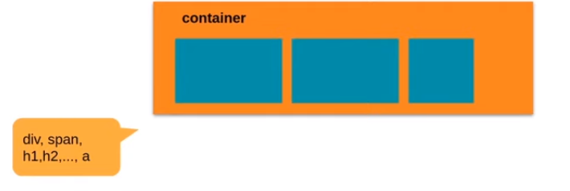
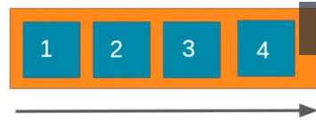
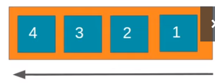
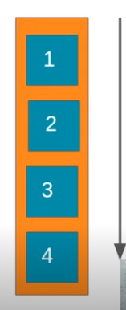
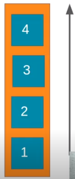

suporte
Foi projetado como um modelo de layout unidimensional e como um método que pode oferecer distribuição de espaço entre itens em uma interface e recursos de alinhamento.
Flex Container
É a tag que envolve os itens, será nela que iremos aplicar a propriedade "display: flex". Transforma todos os seus itens filhos em flex itens.
Flext Item
São os elementos filhos diretos do Flex Container. E também podem se tornar Flex Containers!
Propriedades!
Display: flex
Torna a tag um elemento do tipo flex container, assim automaticamente todos os seus filhos diretos desta tag,tornam-se em flex items.
Flex-direction
É a propriedade que estabelece o eixo principal do container, definindo assim a direção que os flex items são colocados no flex-container.
os eixos...
- row(padrão): à direção do texto, esquerda para direita 
- row-reverse: sentido oposto à direção do texto 
- column: ordenação de cima para baixo, em coluna unica 
- column-reverse: ordenação inversa, de baixo para cima 